Our Story in Photos
A visual journey through nursing history, friendship, and advocacy — from Dayton, Ohio to London, England and beyond.
Attending opening of the new exhibit “Healing Spaces: Healthcare Design Past, Present and Future”, funded by donations from American Friends.
Reprised last year’s Nurses Day event with “Tacos and a Talk, Take 2” which included a historical uniform display. Featured speaker was consultant & podcaster Nurse Rosa Hart.
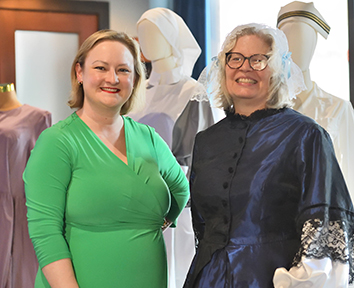
Completed production of Friends of FNM’s interactive online Virtual Tour Of Lea Hurst. We previewed the tour at the Nightingale Museum booth during the AONL conference in Boston, Massachusetts.
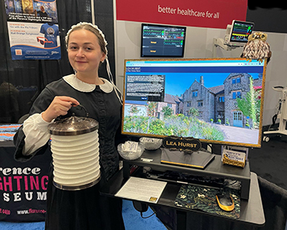
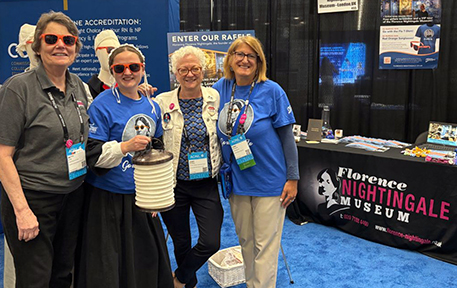
Attended performance of Nurse Blake’s “Shock Advised!” tour. Blake combines his “passion for nursing and comedy to create a positive disruption in the nursing space.”
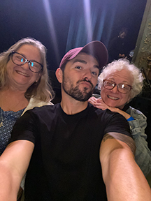
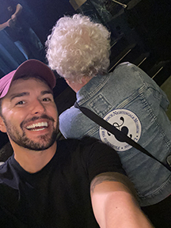
Organized second annual Nurses Day event “Tacos and a Talk.” Featured speaker was renowned Nightingale scholar and author, Lynn McDonald.
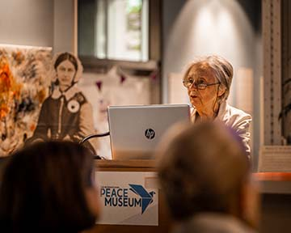
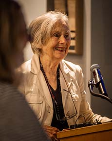
New permanent exhibit British Military Nursing in Peace and War opens. The Friends contributed a video interview with Col Dan Kirkpatrick – US Air Force Nurse.
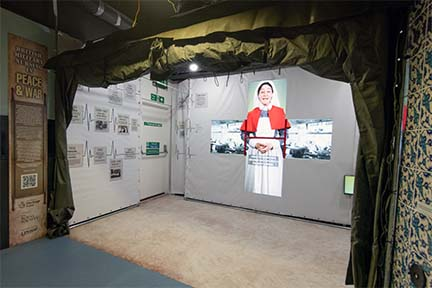
Led by Dr. Donna Curry, a group of American nurses visited Nightingale-related locations around England including Nightingale’s grave and two nights at her childhood home, Lea Hurst.
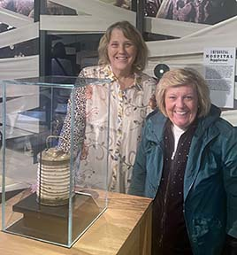
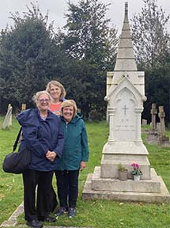
Museum display at the American Association of the History of Nursing Conference, Pittsburgh, Pennsylvania.
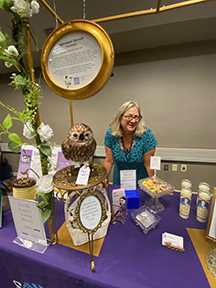
Successful GoFundMe campaign to ship Nightingale’s wheelchair from Johns Hopkins University to the Florence Nightingale Museum in London.
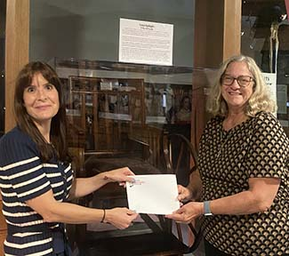
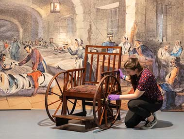
Organized & sponsored Nurses Day picnic, “Nurses Lunch Break,” in Dayton, Ohio. Dr. Donna Miles Curry appeared in Nightingale dress to deliver the keynote address.
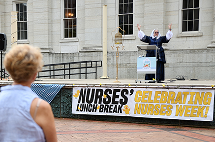
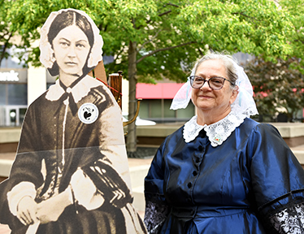
Museum display at the Wright State University School of Nursing Graduation.
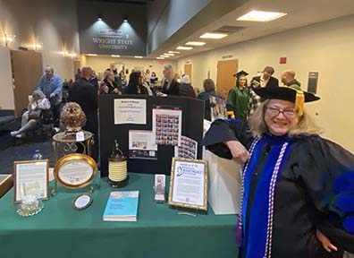
Florence Nightingale Museum in London officially reopens after long closure for Covid. Friends founder Dr. Curry presents donation check to Director David Green.
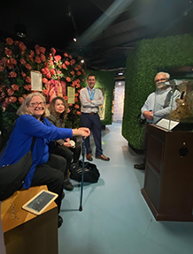
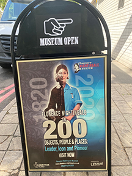

Registered the “Friends of the Florence Nightingale Museum” as a 501(c)3 nonprofit business in Ohio.